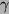
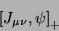
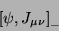
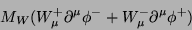
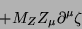
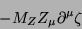
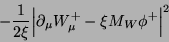
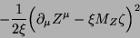
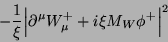
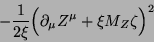

| Page | Position | Replace | by | Thanks go to |
|---|---|---|---|---|
| 9 | Ex. 1.4 | anticommutation relation | anticommutation relations [a,a]+=0 and | R. N. Mohapatra, U of Maryland, College Park |
| 12 | Eq. (2.3) | The last term, containing the partial time derivative, should be deleted since the variations of q are being taken at a given time. In the text following this equation, the sentence "We will assume .... vanishes" should be deleted as well. | Shamik Gupta, Calcutta University | |
| 17 | Ex. (2.3) | The first term in the Lagrangian has both vector indices as subscripts. One of them should be a superscript. | M. B. Einhorn, U of Michigan | |
| 41 | Eq. (3.64) | d4x | d4xʼ | R. P. Malik, S N Bose Centre, Calcutta |
| 43 | Eq. (3.80) | Epʼ | Ep | R. P. Malik, S N Bose Centre, Calcutta |
| 57 | Eq.(4.61)
and (4.62) |
v+
v- |
-v-
v+ to match with other texts (note). |
M. B. Einhorn, U of Michigan |
| 60 | Ex. (4.16) | Show that it is impossible to find a linear combination of the u-spinors of Eq. (4.60) that would be an eigenstate of 5, unless the fermion is massless. Further, for a massless fermion, show that the eigenstates of 5 are the helicity eigenstates. | ||
| 63 | Eq. (4.89) |  |  | |
| 63 | Ex. (4.19) | Add the following Hint to the problem:
You will have to use Eq. (4.101). |
||
| 66 | Eq. (4.108) | d4x | d4xʼ | R. P. Malik, S N Bose Centre, Calcutta |
| 118 | Ex. 7.4 | with h substituted by |hʼ| | with h2 substituted by |hʼ|2 / (1 - 4m2/M2) |
Gabriel Sanchez-Colon, CINVESTAV, Mexico |
| 146 | Eq. (8.21) | M2 | ½M2 | |
| 149 | Eqs. (8.32), (8.33) |
There should not be any minus sign on the right hand side. | Sean Murray, National University of Ireland, Galway | |
| 154 | After Eq. (8.55) | Delete the text "Notice the negative .... sign-flipped commutator." | ||
| 154 | After Eq. (8.57) | This is related to the problem of the sign-flipped commutator of A0 with Pi0 | This is related to the wrong normalization of epsilon0 as shown in Eqs. (8.47) and (8.48) | |
| 157 | Eq. (8.71) | There should be a minus sign in front of the quantity on the right hand side. | Sergio Gaudio, Boston College | |
| 238 | Eq. 11.94 | W1 = - ½ q2 (F1 + 2mp F2)2 | W1 = ½ q2 (F1 - 2mp F2)2 | |
| 300 | Eq. (13.64), 2nd line | In the denominator of the last term, the quantity 2k.k' has the wrong sign. It should be +2k.k' instead of -2k.k'. | Rashidul Islam, S. N. Bose Center, Calcutta | |
| 314 | Fig 14.1 | In the Feynman rule for the quartic coupling, the overall sign in front of the second line should be negative. | ||
| 325 | Eq (15.5) | The structure function factor in the rightmost term should be fbca instead of fabc. These two are equal for hermitian geneators, but not for the non-hermitian generators used here. | ||
| 327 | Eq. (15.23) | 
 |
 |
C. S. Aulakh, Punjab University, Chandigarh |
| 328 | Eq. (15.24) | 
 |

 |
|
| 333 | Eq (15.47), 2nd line | There should be a factor of γ5 on the right side of the equation as well. | William Kaufmann, Arizona State University, Tempe | |
| 341 | after Eq. (15.79) | The gAgV terms coming from here will contain only one trace ... added with the complex conjugate term, they will vanish | The gAgV terms will vanish because they multiply one trace which is symmetric in the Lorentz indices and another which is antisymmetric, | |
| 357 | Eq. (A.31) | There should be a minus sign in front of the quantity on the right hand side. | Monica Deep, Punjab University, Chandigarh | |